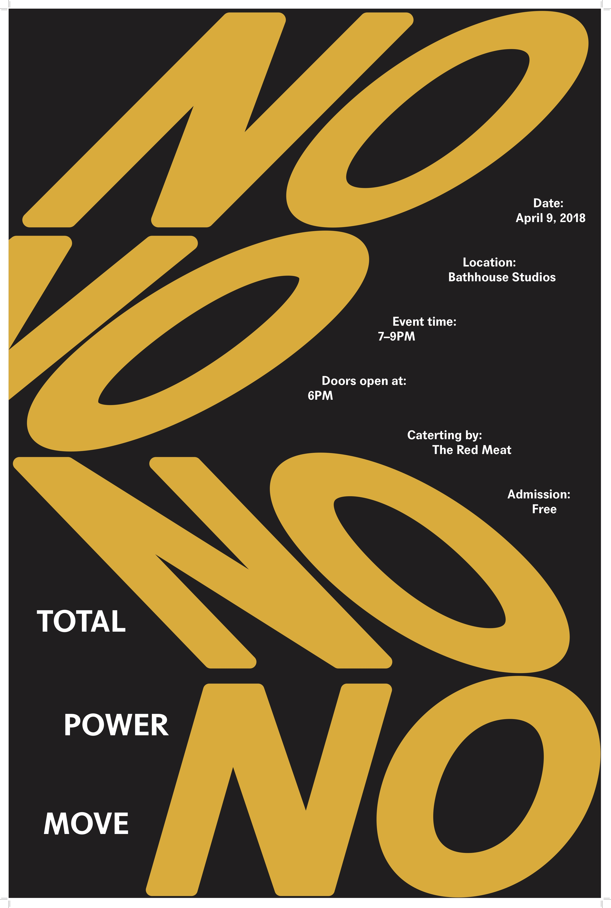

Total Power Move is a night of conversations that deal with the
subject of power. Speakers take the stage to share their personal
stories as powerful graphics unfold on the big screen, similar
to a live ‘magazine’.The poster is inspired by author Fariha Roisin’s speech - What it means to derive power from yourself and not from the validation from men or other people.
The slanted no represents the whipping movement repeated in the speech. “The way I flex is by learning how to become power, how to embody it, how to become temeritous and fierce and fire and whip whip whip. I become the steely woman society never wanted me to become, my rage sublimating into how I flex, flex, flex against the tyranny of men telling women who and what they should be.”